Dota 2 Backgrounds mods
Custom backgrounds.
 Last Match
Last Match Ulquiorra Purple
Ulquiorra Purple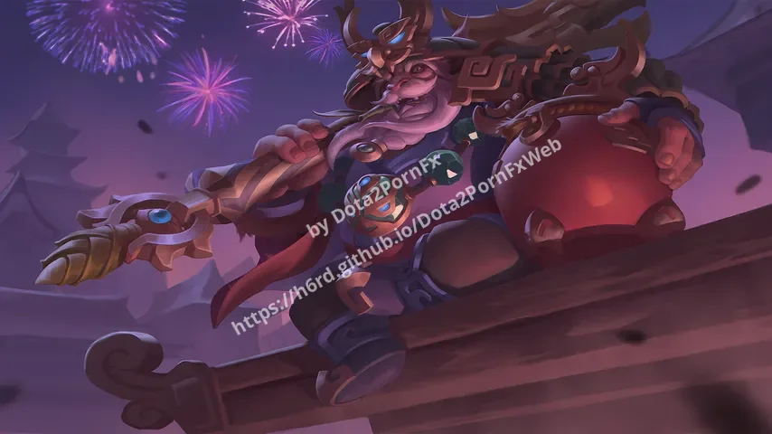
Brewmaster Moonflower Field
Moonflower Field Forgotten Sword
Forgotten Sword Depressed SpongeBob
Depressed SpongeBob Lonely Quay
Lonely Quay Code Geass
Code Geass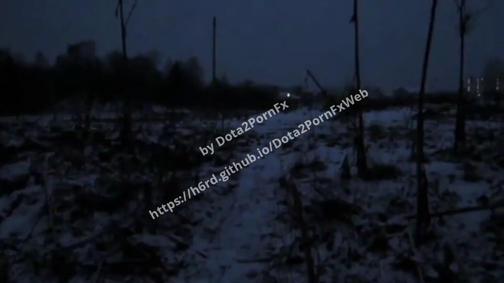
Winter Solitude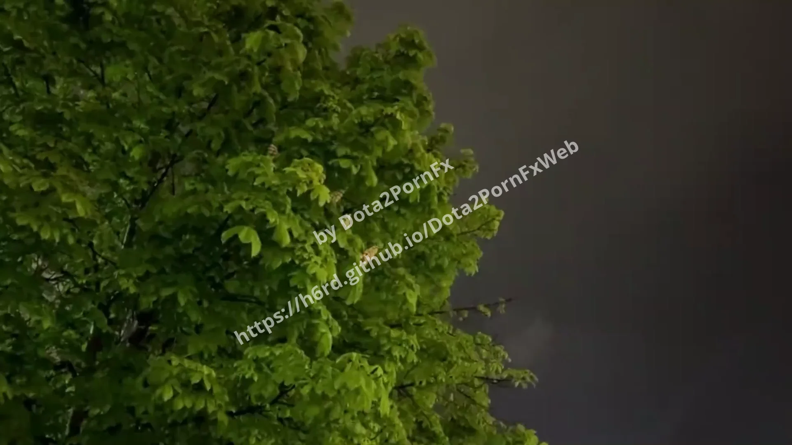
Cloudy Tree Zenitsu White
Zenitsu White Nier Automata
Nier Automata Kurumi Tokisaki
Kurumi Tokisaki Sad Maomao
Sad Maomao Dead Eyes
Dead Eyes Katana In Forest
Katana In Forest Field Grass
Field Grass Snowfall In Forest
Snowfall In Forest Cyrene Song
Cyrene Song Blossom Rem
Blossom Rem Kakehashi Subaru
Kakehashi Subaru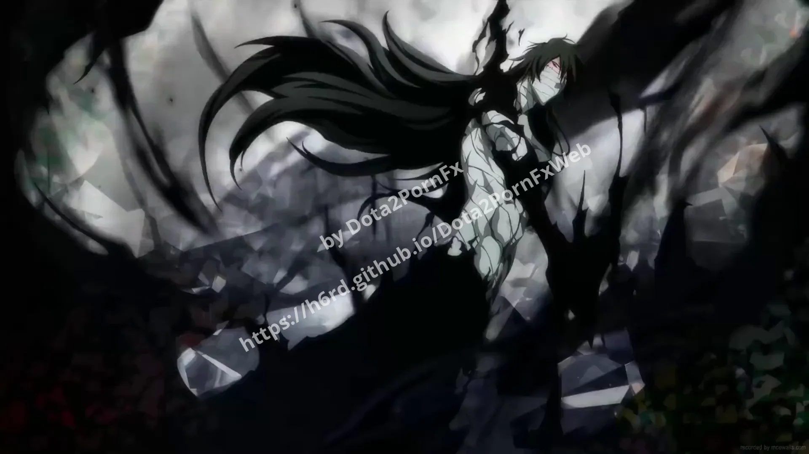
Ichigo Liberalio Nikke
Liberalio Nikke Rainy Girl
Rainy Girl Rei Ayanami
Rei Ayanami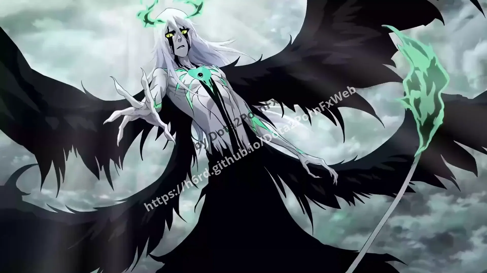
Ulquiorra Yuno Gasai
Yuno Gasai Sajin Komamura
Sajin Komamura Shadow Wreck
Shadow Wreck Lelouch Lamperouge
Lelouch Lamperouge Kira and Ryuk
Kira and Ryuk Garden of Quiet Days
Garden of Quiet Days Floating Dog
Floating Dog Corgi Sleeping
Corgi Sleeping Cat Under Rain
Cat Under Rain Fallen Paladin
Fallen Paladin Nikaido Hiro
Nikaido Hiro Winter Forest
Winter Forest Knight Artorias
Knight Artorias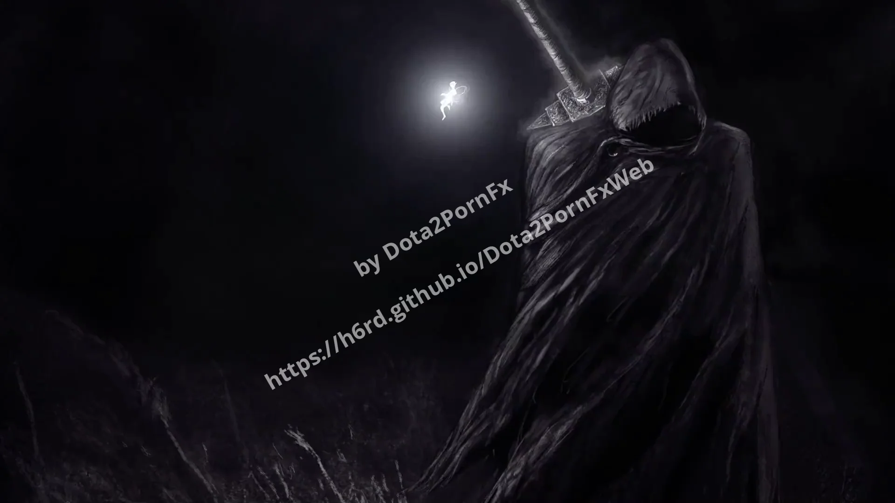
Guts Minecraft Rain
Minecraft Rain Old Bus Stop
Old Bus Stop Pine Forest
Pine Forest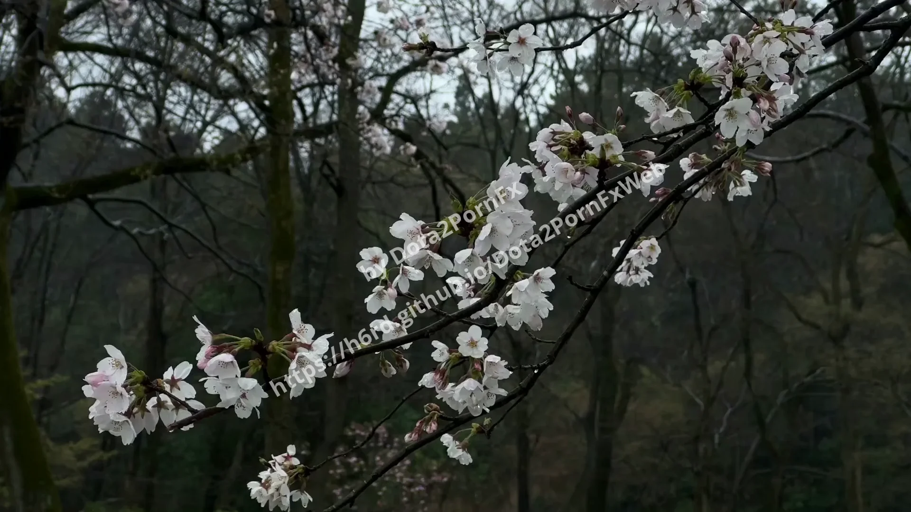
Sakura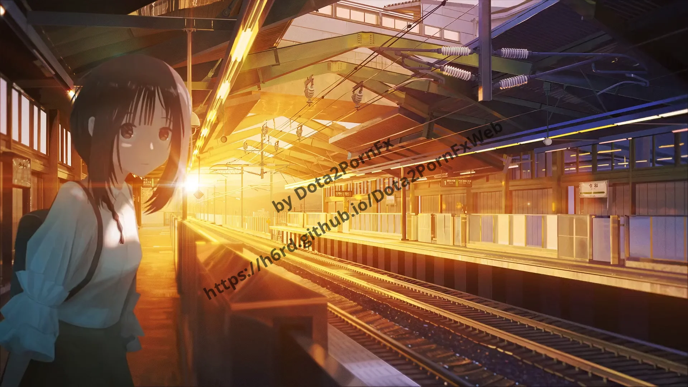
Station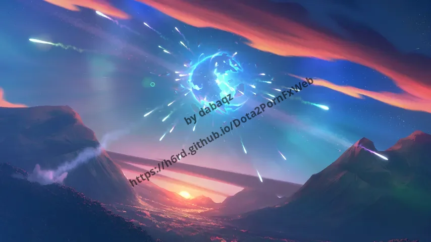
Nemestice Grave of the Fireflies
Grave of the Fireflies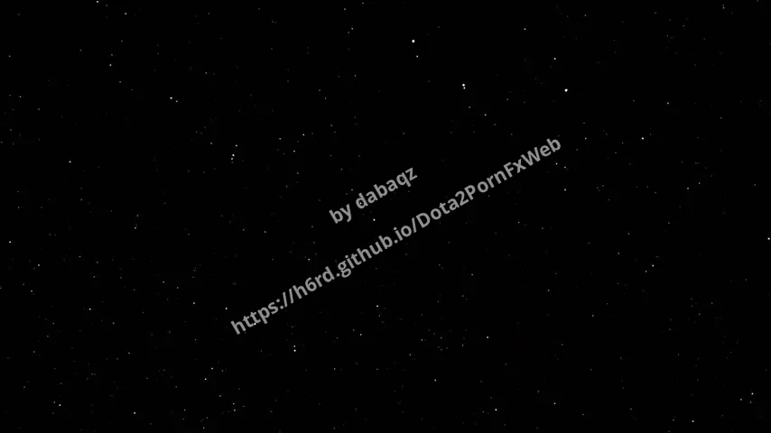
Stars Sky Trees
Sky Trees River Vials
River Vials Shadow Fiend
Shadow Fiend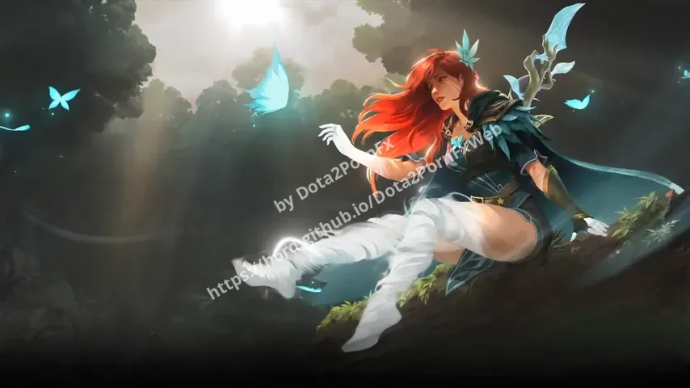
Windranger Light Yagami
Light Yagami Experiments Lain
Experiments Lain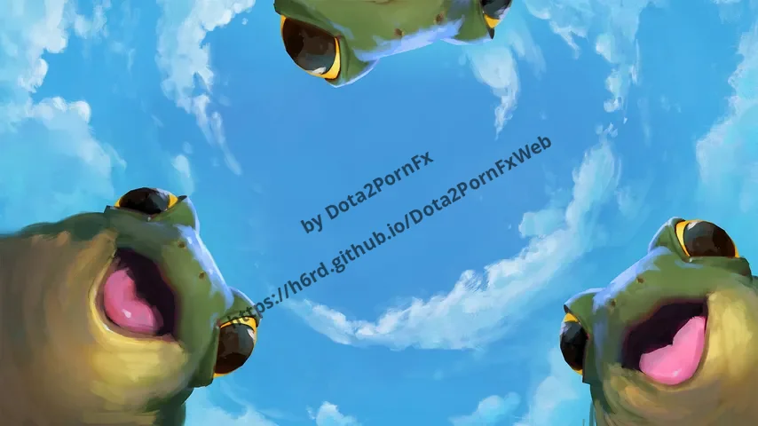
Froglings Sea Of Flowers
Sea Of Flowers Ken Kaneki
Ken Kaneki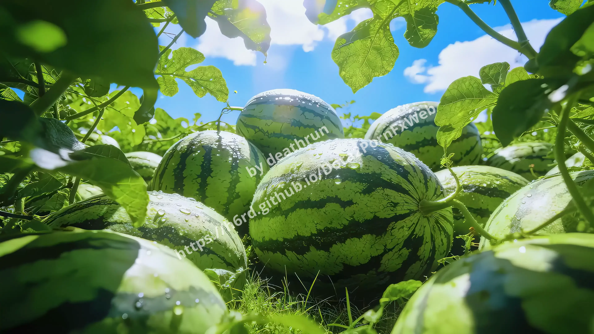
Watermelons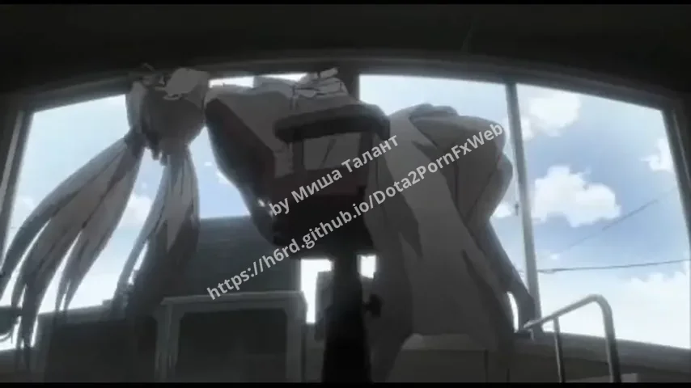
Sora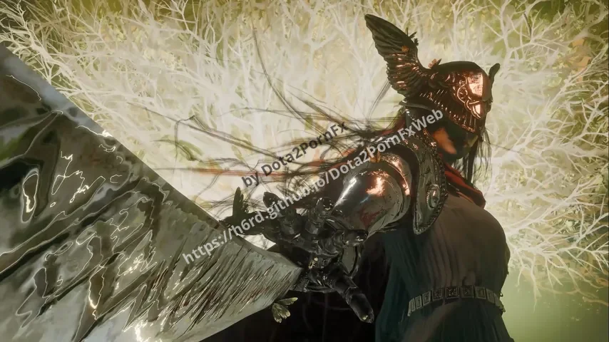
Malenia Beneath the Seventh
Beneath the Seventh Illidan Stormrage
Illidan Stormrage Amor Endscreen
Amor Endscreen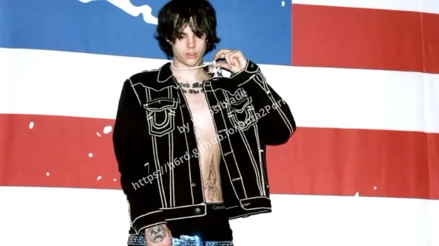
Sematary Dark Tree
Dark Tree Taghmel Ix-Xita
Taghmel Ix-Xita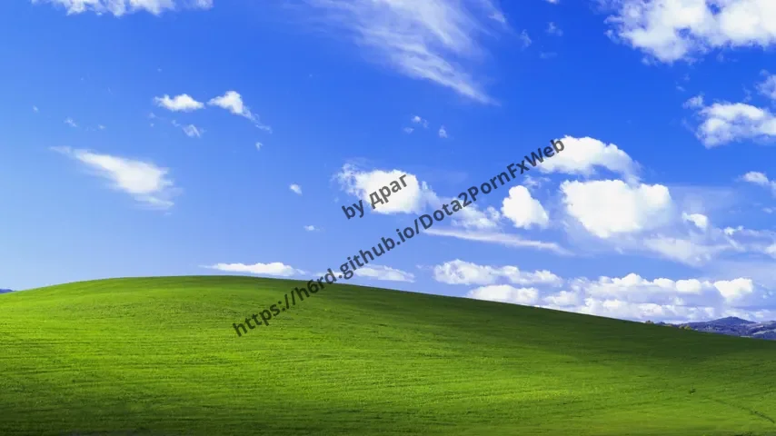
Bliss Gwardjan Tad Dawl Perfezzjoni
Gwardjan Tad Dawl Perfezzjoni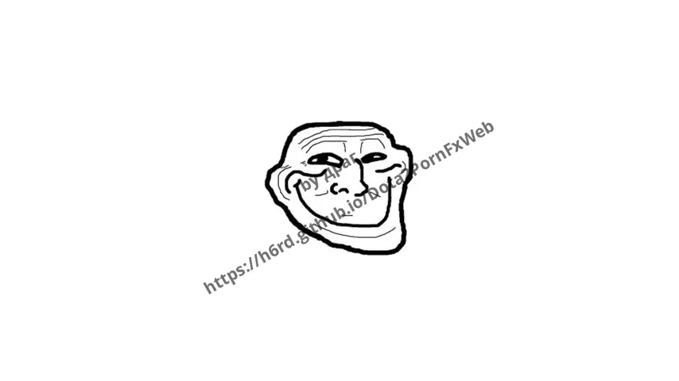
Xvii The Great Awakening
The Great Awakening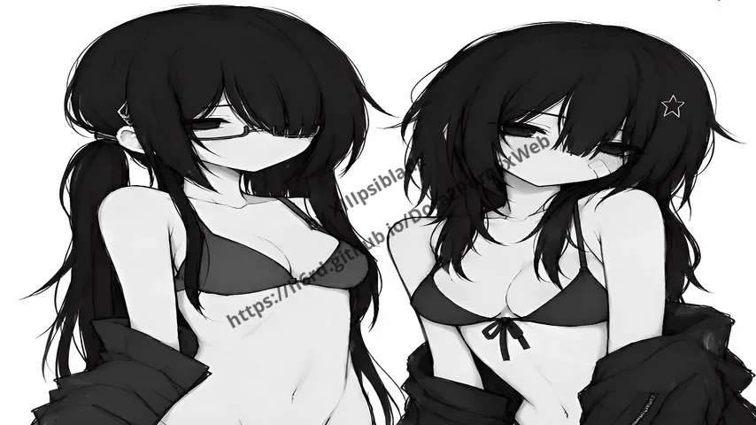
Anime Black Background
Black Background- Pug
 Tcoaal Wallpaper V1
Tcoaal Wallpaper V1 Tcoaal Wallpaper V3
Tcoaal Wallpaper V3 Tcoaal Wallpaper V2
Tcoaal Wallpaper V2 Spectaclcore Blue Girl
Spectaclcore Blue Girl Lone Tree Meadow
Lone Tree Meadow Push The Button
Push The Button Last Match Vidget
Last Match Vidget Ptu Suzuya Juzo
Ptu Suzuya Juzo Old Style Menu
Old Style Menu Girl In The Bus
Girl In The Bus Tcoaal V5
Tcoaal V5 Jenna Wallpaper
Jenna Wallpaper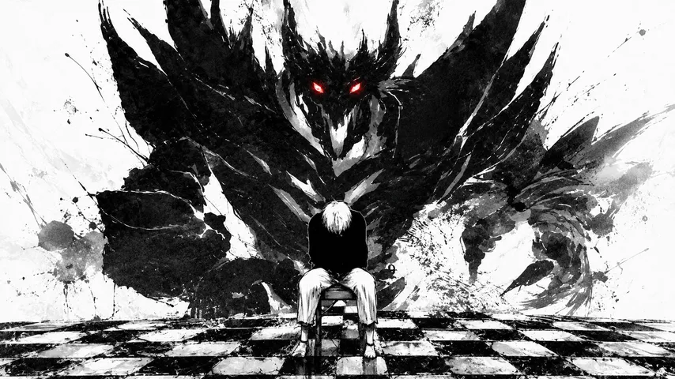
Kanekisf Kururu Tsepeshi
Kururu Tsepeshi Majo No Tabitabi
Majo No Tabitabi Blue Archive Atsuko
Blue Archive Atsuko City Ruins
City Ruins Blue Archive Ako
Blue Archive Ako Blue Archive Hina Summer
Blue Archive Hina Summer Lye Batenkaitos
Lye Batenkaitos Ram And Rem
Ram And Rem Japanese Background
Japanese Background Girl Resting Under Tree
Girl Resting Under Tree Stylish Cat
Stylish Cat- Minions
 Zero Two
Zero Two Main Menu Reborn Beta
Main Menu Reborn Beta Main Menu 7.00 Style
Main Menu 7.00 Style